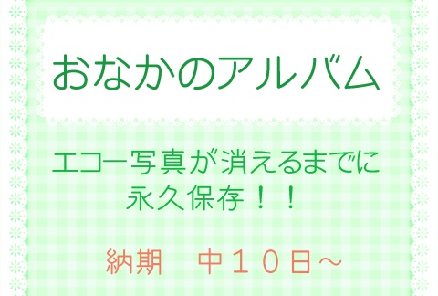
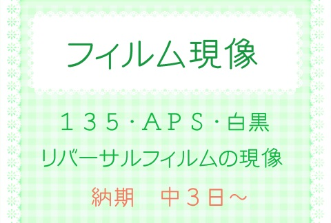
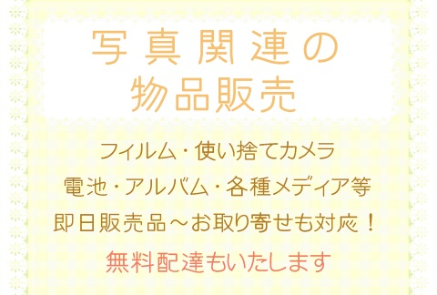
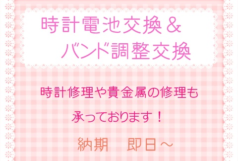

平成７年４月に写真屋にて開業し地域の皆様のおかげでなんと！
来年２５年目を迎える事ができます。心より感謝申し上げます。
大池駅前開発により店舗移転を機に吉田設備と併設店にて営業し早６年が経過しました。
駅より２分ほど離れてしまいましたがお店は大変広くなり皆様にゆったりして頂けるスペースもでき
社交の場にもなっています・・・笑
吉田設備と併設店の為、お家の事も何なりと・・・
写真屋としても業務内容を拡大しいろんな事に取り組んでおり・・・パワーアップしています！！
ちょっとした地域の便利屋さんになってますのでぜひ一度お気軽にお立ち寄り下さい。
小さな事でも遠慮なく何なりとご相談お待ちしています！！



